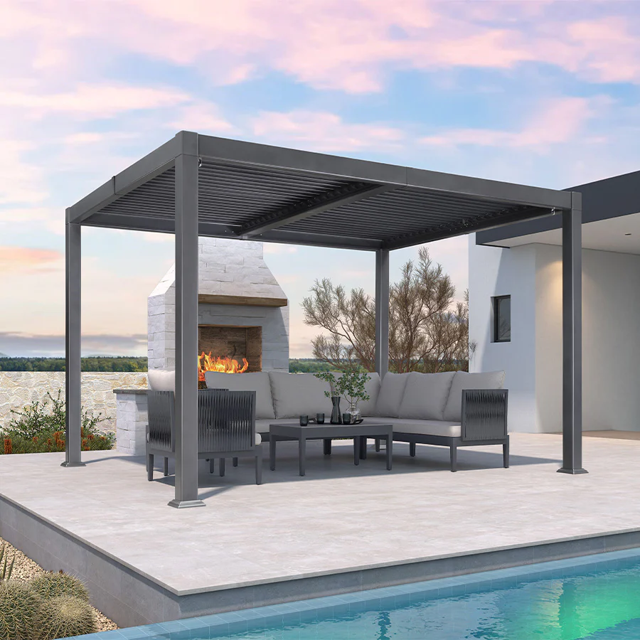
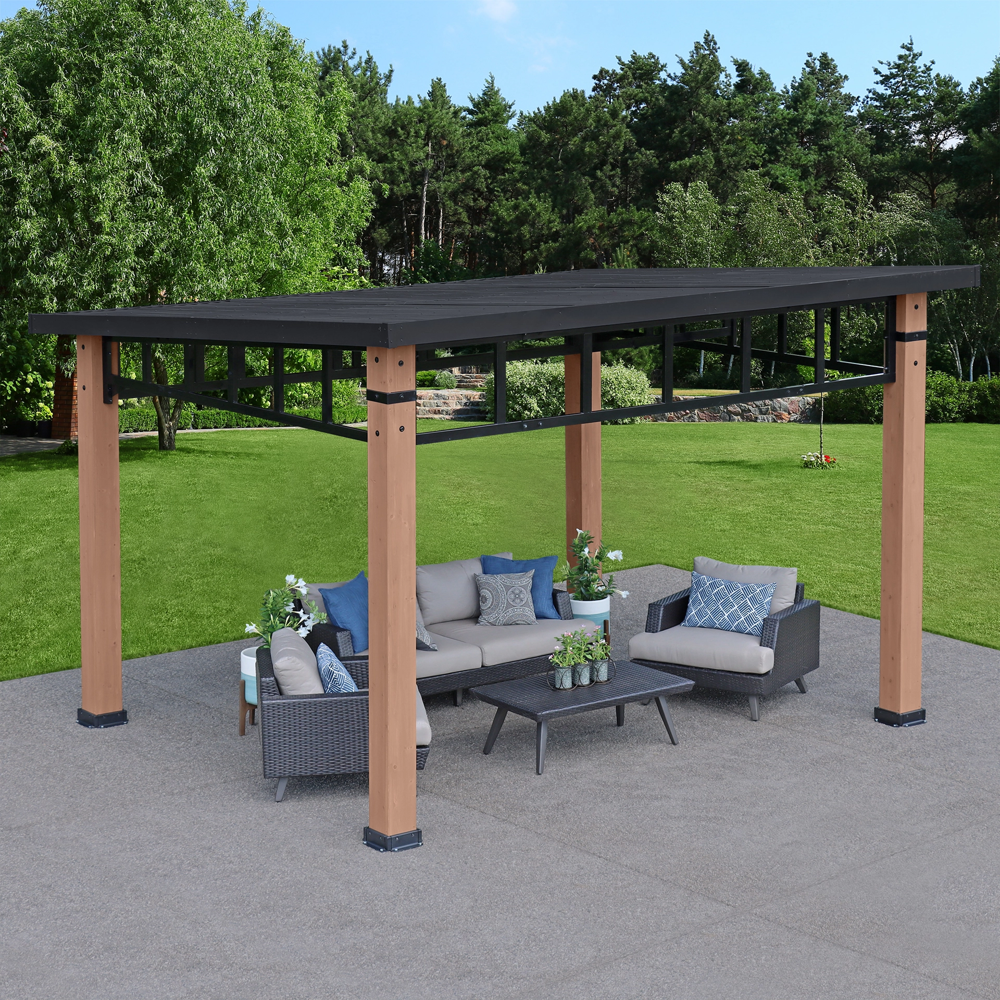

Transform your outdoor space into a stunning
backyard oasis with a pergola! Pergolas not
only provide shade and comfort but also add an
elegant touch to your patio or garden. With a
variety of styles, materials, and features
available, how do you choose the perfect pergola
for your needs? We’ve got you covered with our
ultimate guide to the best pergolas of 2024.
The Top Contenders of 2024: Pergola Edition
Discover the top pergola options of 2024,
offering a variety of styles, materials,
and features to enhance your outdoor space.
Whether you prefer the natural beauty of
cedar wood or the low-maintenance appeal of
vinyl, there’s a pergola for every preference.
From retractable canopies for adjustable shade
to powder coated aluminum frames for durability,
these pergolas are designed to elevate your
al fresco experience.
Best Pergolas:
Purple Leaf Outdoor Retractable Pergola - Best Value
Backyard Discovery Cedar Pergola - Best for natural aesthetics
Purple Leaf Outdoor Louvered Pergola: Best Louvered Pergola For Your Money
Yardistry Contemporary Pergola with Aluminum Roof - Best Protection from the Elements
Yardistry Madison Solid Wood Pergola with Canopy - Best for entertaining
Purple Leaf Outdoor Retractable Pergola: Best Value
This pergola is designed to
withstand the elements while offering a
stylish addition to your outdoor space.
You can adjust the retraction of the canopy
to your desired position, providing just the
right amount of shade and protection.
Its standout feature is its durability and weather
resistance, making it a worthwhile investment for
those seeking to create a comfortable space for
relaxation or entertainment outdoors. With its
sleek design and high-quality materials, the
Purple Leaf Outdoor Retractable Pergola is a
top choice for those seeking style and
functionality within a budget.
Purple Leaf Outdoor Retractable Pergola
Best Value
$429
Specifications
Material: Powder Coated Aluminum Frame
Durable and weather resistant materials
Pergola canopy made of polyester -durable, UV resistant, fade resistant and water-repellent
Adjustable Canopy
Backyard Discovery Cedar Pergola: Best for Natural Aesthetics
For those who value natural aesthetics in
their outdoor space, the Backyard Discovery
Cedar Pergola is an ideal choice among cedar
pergolas. Whether you’re
hosting a garden party or simply enjoying a
quiet afternoon with a book, the Backyard
Discovery Cedar Pergola offers a beautiful
and functional focal point for your outdoor
space, creating a backyard oasis.
Backyard Discovery Cedar Pergola
Best for Natural Aesthetics
$1,369
Specifications
Material: Cedar Wood
Durable, naturally resists bugs and decay
Structural Strength: Sturdy 5 1/2" cedar upright posts with diagonal braces to prevent from tipping over
Pre-cut, pre-drilled and pre-stained
Purple Leaf Outdoor Louvered Pergola: Best Louvered Pergola For Your Money
The purple leaf outdoor louvered pergola is a striking addition to any outdoor space,
blending functionality with aesthetic appeal. Its adjustable louvers allow for precise
control of sunlight and shade, providing a comfortable environment throughout the day.
The rich modern design adds a touch of elegance and uniqueness to the pergola,
making it a focal point in gardens, patios, or backyard retreats. Whether used for
lounging, dining, or hosting, this pergola offers versatility and style, enhancing
outdoor living experiences with its charming design and practical features.
Purple Leaf Louvered Pergolas
Best Louvered Pergola for Your Money
$2,199
Specifications
Material: Powder Coated Aluminum
Adjustable Pergola Roof: Louvers allow you to control how much shade or sunlight
Hidden Gutters: Non-visible gutters allow for rain to run off roof and not build up or get you wet
Withstands winds up to 45 MPH

Yardistry Contemporary Gazebo with Aluminum Roof: Best Protection from the Elements
The Yardistry 12' x 14' Contemporary Gazebo with Aluminum Roof combines elegance
with durability, making it an ideal addition to any outdoor space. Its spacious
12' x 14' footprint provides ample room for outdoor gatherings, relaxation, or even
a small outdoor event. The contemporary design features clean lines and a sturdy
aluminum roof that offers protection from the elements year-round. Whether used as a
sheltered dining area, a cozy lounge space, or a stylish venue for special occasions,
this gazebo adds functional beauty to your backyard, patio, or garden setting.
With its premium construction and timeless appeal, the Yardistry gazebo is sure to
become a favorite gathering spot for friends and family alike.
Yardistry Contemporary Gazebo with Aluminum Roof
Best Protection from the Elements
$2,299
Specifications
Material: 100% FSC Certified Wood and Black Powder-Coated Steel Roof Trusses
Hardtop Roof: Sloped design allows for great drainage
Pre-cut and pre-drilled material for easy assembly
Large 7" x 7" posts for the upmost structureal integrity

Yardistry Madison Pergola: Best for Entertaining
The Yardistry Madison Pergola is an excellent choice for entertaining guests
due to its spacious design and versatile features. This pergola offers a generous
12' x 14' footprint, providing ample room for seating, dining, or socializing.
Its sturdy construction, made from premium cedar wood, ensures durability and a
beautiful aesthetic that complements any outdoor setting. The Yardistry Madison Pergola
stands out for entertaining guests not only because of its spacious design and durable
construction but also because of its built-in bar. These convenient shelves are
integrated into the pergola's structure, providing a designated area for serving drinks
and snacks during gatherings.
Yardistry Madison Cedar Pergola
Best for Entertaining
$2,498
Specifications
Material: Premium Cedar Lumber
Removable, Snap-On Sunshade made from PVS coated breathable wicking fabric
Bar and shelf feature allow for built in orgainzation
Pre-cut, pre-drilled and pre-finished with a Timber Grey wood stain